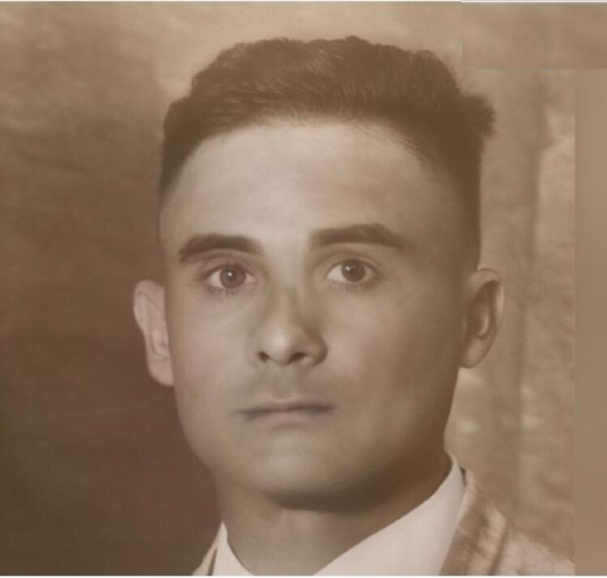

Nuestra FilosofÃa Educativa
En el Politécnico Profesor José Mercedes Alvino (CEJOMA) ofrecemos una formación técnico-profesional basada en una educación integral de calidad, orientada al desarrollo de competencias y el fortalecimiento de los valores humanos.
Somos una institución de servicio comprometida con una educación cualificada que promueve la formación de personas justas, capaces, dispuestas a enfrentar las exigencias empresariales e insertarse con éxito en estudios superiores.
“Creemos que la verdadera felicidad se alcanza actuando con imparcialidad, respeto a las leyes y a la dignidad humana; servir con amor, entrega y pasión, ha de ser nuestra esencia.â€
Misión
Formar profesionales técnicos competentes, aptos para responder con eficiencia a los nuevos desafÃos del mundo laboral y del nivel superior; dispuestos a transformar con amor y justicia su entorno social, cultural, cientÃfico y tecnológico.
Visión
Ser un centro educativo modelo que ofrezca un servicio de la más alta calidad y logre la formación de recursos humanos capacitados, respetuosos e identificados con su patria.
Nuestros Valores
Los principios que sustentan nuestra labor educativa diaria son:
- Amor
- Justicia
- Responsabilidad
- Respeto
- Honestidad

Prof. José Mercedes Alvino
Insigne EducadorNuestra institución rinde honor con su nombre a la trayectoria, dedicación y entrega del Profesor José Mercedes Alvino , un educador ejemplar que dedicó su vida a la formación moral y académica de múltiples generaciones. Su legado vive a través de la misión y visión de este politécnico.
Canabacoa, Santiago, R. D. | Distrito Educativo 08-03, Santiago-Sureste | Código de Gestión: 14601
Contactos: cejomal.2014@gmail.com | jomal.2014@hotmail.com